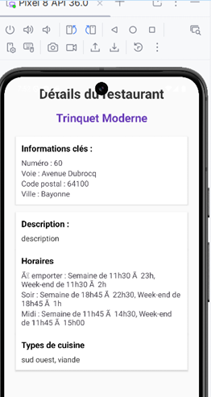

Ticket 4 : Logique – Affichage des données reçues
Programmes :
J’ai ajouté les dépendances nécessaires pour l’affichage des horaires, puis complété la classe
DetailsRestoActivity. Cette activité permet d’afficher les détails du restaurant sélectionné dans la liste.
Lors du onCreate() :
- Chargement du layout associé.
- Récupération des différentes vues : TextView, Button, LinearLayout, etc.
- Récupération de l’objet Restaurant transmis via l’Intent (
getSerializableExtra("restaurant")).
- Si cet objet existe, appel de la méthode afficherDetails(resto).
- Sinon, affichage d’un Toast d’erreur et fermeture de l’activité.
- Configuration du bouton Retour qui ferme simplement la page via
finish().
La méthode
afficherDetails() :
- Affiche le nom du restaurant, son adresse complète et sa description.
- Affiche les types de cuisine, séparés par des virgules (ou un texte par défaut si aucun type n’est renseigné).
- Affiche les horaires issus d’une Map : pour chaque créneau (midi, soir, semaine, week-end…), un
TextView est ajouté dynamiquement dans le LinearLayout.
- Si aucun horaire n’est disponible, affiche “Horaires non disponibles”.
- En cas d’erreur, utilisation de Log.e pour faciliter le débogage + affichage d’un Toast.
Tâches réalisées :
- Ajout des dépendances nécessaires pour la gestion des horaires.
- Complétion de DetailsRestoActivity pour récupérer et afficher toutes les données du restaurant.
- Mise en place de l’affichage dynamique des horaires via un LinearLayout.
- Ajout de la gestion des erreurs (Toast + Log.e).
- Configuration du bouton Retour pour revenir à la liste des restaurants.
Test fonctionnel :
Objectif : Vérifier l’affichage correct des données reçues depuis l’API sur l’écran « Détails du restaurant ».
1. Lancer l’application et cliquer sur Voir Liste des Restaurants.
2. Sélectionner l’un des restaurants dans la liste.
→ Un Toast s’affiche brièvement (confirmation de réception de l’objet Restaurant).
3. L’écran Détails apparaît et affiche toutes les informations du restaurant (nom, adresse, types de cuisine, horaires, description).
4. Le bouton Retour ramène correctement vers la liste des restaurants.
